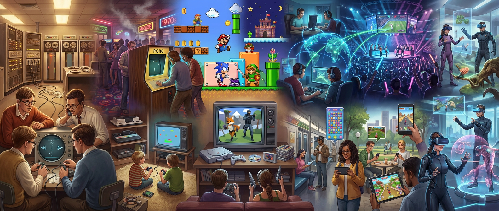

La historia de los videojuegos puede entenderse como una narración continua en la que la tecnología, la cultura y la creatividad se entrelazan. Desde sus primeros pasos en laboratorios universitarios hasta convertirse en un fenómeno global, los videojuegos han acompañado y reflejado la evolución de la sociedad. En sus inicios, eran simples experimentos en computadoras gigantes, creados por científicos y estudiantes que buscaban explorar las posibilidades de las máquinas. Spacewar! en los años sesenta fue un ejemplo de cómo la curiosidad académica podía transformarse en entretenimiento. Poco después, con la llegada de Pong y las primeras consolas, los videojuegos comenzaron a salir de los laboratorios y a entrar en los hogares y salones recreativos, convirtiéndose en una forma de ocio accesible para el público.
La consolidación de empresas como Atari y Nintendo marcó un antes y un después. Nintendo, en particular, no solo salvó a la industria tras la crisis de 1983, sino que creó personajes y universos que se convirtieron en símbolos culturales. Mario, Zelda y otros héroes digitales trascendieron la pantalla para convertirse en parte de la identidad de generaciones enteras. Con el paso de los años, los avances tecnológicos permitieron que los videojuegos dejaran de ser experiencias simples y se transformaran en mundos tridimensionales llenos de narrativa y emoción. La llegada de consolas como PlayStation y Nintendo 64 abrió la puerta a historias más complejas, mientras que los ordenadores personales ofrecieron experiencias únicas en géneros como la estrategia y la simulación.
Fue entonces cuando los videojuegos empezaron a ser considerados no solo entretenimiento, sino también una forma de arte y expresión. La conectividad en línea revolucionó la manera de jugar. Los videojuegos dejaron de ser experiencias solitarias o locales para convertirse en espacios compartidos a nivel global. Xbox Live y otros servicios permitieron que jugadores de distintos países se enfrentaran o colaboraran en tiempo real, creando comunidades virtuales que trascendían fronteras. Al mismo tiempo, la Wii introdujo nuevas formas de interacción física, demostrando que los videojuegos podían ser inclusivos y familiares. La irrupción de los teléfonos inteligentes llevó los videojuegos a un nuevo nivel de accesibilidad.
Millones de personas que nunca habían tocado una consola comenzaron a jugar en sus dispositivos móviles, y títulos como Angry Birds o Candy Crush se convirtieron en fenómenos culturales. Paralelamente, los eSports transformaron el videojuego en un espectáculo competitivo, con estadios llenos de espectadores y transmisiones en línea que alcanzan audiencias masivas. Hoy, los videojuegos son un universo en expansión. Los servicios de suscripción y streaming han cambiado la manera de consumirlos, la realidad virtual y aumentada ofrecen experiencias inmersivas que antes parecían imposibles, y la inteligencia artificial promete mundos cada vez más dinámicos y adaptativos. Además, los videojuegos han ganado reconocimiento como una forma legítima de arte, como herramienta educativa y como espacio de encuentro social. En definitiva, la evolución de los videojuegos es la historia de cómo una curiosidad tecnológica se convirtió en un fenómeno cultural global, capaz de unir generaciones, crear comunidades y abrir nuevas formas de imaginar y experimentar el mundo.
